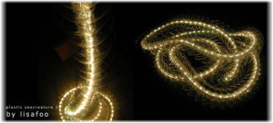
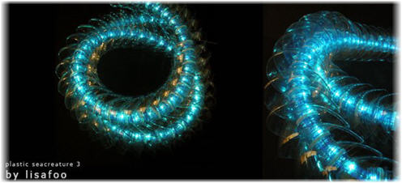
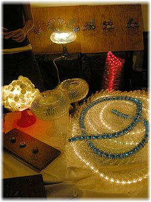
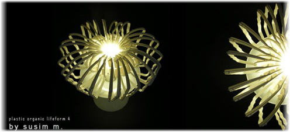

Arte con plástico reciclado
Me encuentro con estas imágenes en Internet, trabajo de dos artistas: Lisa Foo y Su Sim. Presentan una alternativa ecológica y bella para reutilizar la gran cantidad de desechos plásticos que generamos.
No solamente animan al reciclaje por razones ambientales, sino también por motivos estéticos, aunque quizás no todos tengamos la habilidad para crear tales obras. ^_^
{kind=link}
En cuanto al objetivo de estas creaciones, en su blog se puede leer lo siguiente (el original está en inglés):
¡Plástico! ¡Plástico! ¡Plástico! Hay plástico por todas partes. Al parecer, el plástico ha tomado su lugar como la solución final para casi cada aspecto de las necesidades humanas en esta era moderna. Solo piensa en ello. Mira alrededor y dinos si no es verdad. [...]
[...]Las siguientes imágenes ilustran claramente nuestra entusiasta intención de animar a todos a re-pensar, re-usar y reducir cualquier cosa que sea considerado desperdicio.
Unas imágenes más de este trabajo:



Más en el blog de Lisa Foo y Su Sim (LFSS).
Visto en Inhabitat: Stunning Recycled Plastic Lamps by Lisa Foo & Su Sim
Metadatos y acciones
 Temas: arte, curiosidades, imagenes, tierra ⋅
Para guardar: Enlace permanente a esta anotación.
Temas: arte, curiosidades, imagenes, tierra ⋅
Para guardar: Enlace permanente a esta anotación.
 Print This Post
Print This Post
Comentarios
Los comentarios están cerrados.
Categorías
Últimas 4 anotaciones
Últimas anotaciones en cada categoría

Divulgación
El dinero no fomenta la creatividad: Daniel Pink en TEDGlobal 2009

Inspiración
Los 30 no son los nuevos 20

Noticias
Ver tu mente en tiempo real: Christopher deCharms en TED 2008
![Música en la era digital [Animación]](../../../wp-content/themes/tma/images/featured/animation_04_2009_featured.jpg)
Ocio
Música en la era digital [Animación]
octubre 20, 2009, 7:28 am
me encanto este trabajo, yo actualmente estoy realizando peces con desechos plasticos, pueden verlos en mi blog,www.blopaescri.blogspot.com, me gustaría recibir comenterios a serca de mi trabajo, les dejo un cordial saludo
febrero 23, 2011, 5:56 am
Hola buen dia, como nos podemos poner en contacto, espero encuentren mis contactos gracias
Naiby
octubre 7, 2011, 9:46 am
ES MUY AGRADABLE, QUE PERSONA SE INTERESEN POR EL RECICLAJE, Y MAS AUN PARA CONSTRUIR OBJETOS QUE SE VEN ATRACTIVOS, Y QUE LOS VEAN ALGUNIOS COMO YO COMO AYUDA AL PLANETA,ELLOS SI SE PREOCUPAN POR EL PLANETA, HACIENDO ARTE. GRACIAS POR ENSEÑAR A RECICLAR DE OTRA MANERA.